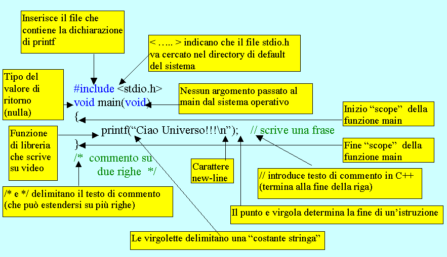

Caratteristiche generali del linguaggio
"Case sensitivity"
Il linguaggio C++ (come il C) distingue i caratteri maiuscoli da quelli minuscoli.
Esempio: i nomi MiaVariabile e miavariabile indicano due variabili diverse
Moduli funzione
In C++ (come in C) ogni modulo di programma è una funzione.
Non esistono subroutines o altri tipi di sottoprogramma.
Ogni funzione è identificata da un nome
Entry point del programma: la funzione main
Quando si manda in esecuzione un programma, questo inizia sempre dalla funzione identificata dalla parola chiave main
Il main è chiamato dal sistema operativo, che gli può passare dei parametri; a sua volta il main può restituire al sistema un numero intero (di solito analizzato come possibile codice di errore).
Le tre parti di una funzione
lista degli argomenti passati dal programma chiamante: vanno
indicati fra parentesi tonde dopo il nome della funzione;
void indica che non vi sono argomenti (si
può omettere)
blocco (ambito di azione,
ambito di visibilità,
scope) delle istruzioni della
funzione: va racchiuso fra parentesi graffe;
ogni istruzione deve terminare con
";" (può estendersi su più
righe o vi possono essere più istruzioni sulla stessa riga);
un'istruzione è costituita da una successione di
"tokens": un "token" è il più
piccolo elemento di codice individualmente riconosciuto dal compilatore;
sono "tokens" : gli identificatori, le
parole-chiave, le costanti letterali o numeriche,
gli operatori e alcuni caratteri di
punteggiatura;
i blanks e gli altri caratteri "separatori" (horizontal
or vertical tabs, new lines, formfeeds) fra un
token e l'altro o fra un'istruzione e l'altra, sono ignorati;
in assenza di "separatori" il compilatore analizza l'istruzione da sinistra
a destra e tende, nei casi di ambiguità, a separare il
token più lungo possibile.
Es.
l'istruzione a = i+++j;
può essere interpretata come: a = i + ++j;
oppure come: a = i++ + j;
il compilatore sceglie la seconda interpretazione.
tipo del valore di ritorno al programma chiamante: va indicato prima del nome della funzione ed è obbligatorio; se è void indica che non c'è valore di ritorno
Commenti
I commenti sono brani di programma (che il compilatore ignora) inseriti al solo scopo di documentazione, cioè per spiegare il significato delle istruzioni e così migliorare la leggibilità del programma. Sono molto utili anche allo stesso autore, per ricordargli quello che ha fatto, quando ha necessità di rivisitare il programma per esigenze di manutenzione o di aggiornamento. Un buon programma si caratterizza anche per il fatto che fa abbondante uso di commenti.
In C++ ci sono due modi possibili di inserire i commenti:
Esempio di programma
